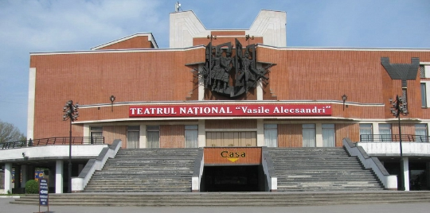
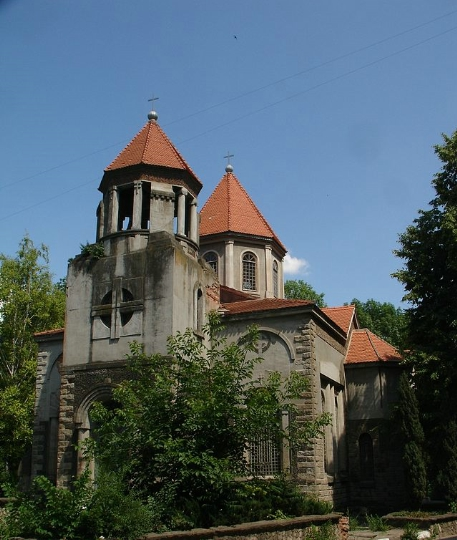
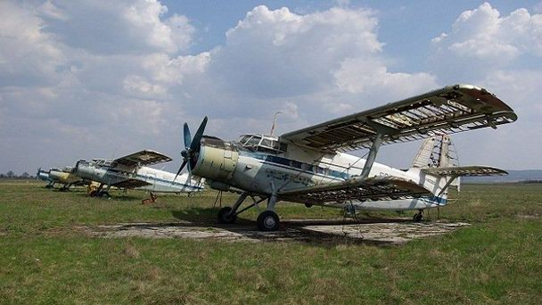

Узнать больше о Бельцах
Национальный театр им. Василе Александри
Национальный театр им. Василе Александри, расположенный в городе Бельцы (Бэльц), является культурным и просветительским центром города. В январе 1990 года театр в Бельцах одним из первых в Республике Молдова получил звание Национального, а спустя год переехал в новое здание, возведение которого длилось 13 лет. Здание имеет два зала – малый и большой, каждый из которых оснащен круговой сценой. Большой зал рассчитан на 584 зрителя, малый способен вместить 60 зрителей. За время работы театра в его репертуаре насчитывается около двухсот спектаклей для взрослых и детей, поставленных по произведениям отечественных и зарубежных классиков и современников. Театр по праву носит звание Национального, так как именно на его сцене можно увидеть лучшие постановки на базе текстов авторов из Молдавии и Румынии. Большое внимание в Национальном театре им. Василе Александри уделяют и постановкам для детей. С 1994 года на его базе функционирует кукольная труппа «Gîgîlici».
Армянская церковь Св. Григория Просветителя в Бельцах
Армянская церковь Святого Григория Просветителя является одной из самых ярких и выразительных архитектурных достопримечательностей города Бельцы (Бэлць). Строительство храма велось с 1910 по 1914 год на средства богатых представителей армянской общины города, а именно - Марии Фокшанян и братьев Лусаханович. В качестве автора проекта и главного архитектора был приглашен известный в то время зодчий Александр Леонтьевич Красносельский, выходец из Украины, который некоторое время работал в Бельцах в качестве городского архитектора. Стоит отметить, что под его руководством было возведено большое количество новых зданий, проведены масштабные работы по благоустройству города, однако именно Армянская церковь Святого Григория стала лучшим его творением. Армянская церковь Святого Григория Просветителя имеет интересную судьбу. Так, после войны ее здание отдали под нужды католической общины, спустя несколько лет в храме открыли спортивную школу для детей и молодежи. В 90-х годах прошлого столетия церковь Святого Григория снова была передана под нужды католической общины города Бельцы. На сегодняшний день ведутся активные переговоры о возращении храма армянам.
Аэропорт Бельцы-Город
Аэропорт Бельцы-Город - один из двух аэропортов города Бельцы, который, в отличие от международного Бельцы-Лядовены, был региональным аэропортом. На сегодняшний день аэропорт не работает, а на его месте располагается специальная экономическая зона (ограниченная территория с особым юридическим статусом). Раньше аэропорт с его площадками использовался для внутренних полетов между городом и соседними молдавскими городами. Во время Второй мировой войны он был важнейшим аэропортом в этом регионе. В то время он принимал небольшие самолеты, выполняя хозяйственные и публичные функции. Аэропорт располагается непосредственно в городе Бельцы, поэтому к нему нетрудно добраться от центра города на троллейбусе (время в пути - 10 минут).